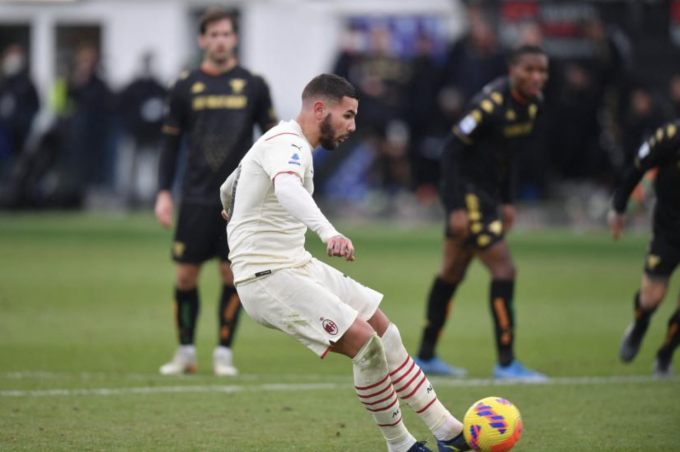

Ibrahimovic đưa Milan lên đỉnh Serie A
ITALYTiền đạo 40 tuổi Zlatan Ibrahimovic mở tỷ số khi Milan thắng chủ nhà Venezia 3-0 ở vòng 21 Serie A hôm 9/1. Trước đối thủ đua trụ hạng, Milan nhanh chóng kiểm soát thế trận. Thậm chí, khi khán giả chưa ngồi ấm chỗ, họ đã mở tỷ số. Hernandez chuyền bóng điệu nghệ cho Rafael Leao băng xuống bên trái. Tiền đạo Bồ Đào Nha dốc vào cấm địa rồi căng ngang đúng tầm Ibrahimovic băng vào đệm bóng ở cự ly khoảng 2 mét. Đây là bàn thứ tám của anh qua 13 trận, cũng là trận thứ sáu liên tiếp trên sân khách ở Serie A mùa này.
 Ảnh: Ibrahimovic (phải) chia vui cùng Bakayoko sau khi mở tỷ số vào lưới Venezia ở vòng 21 Serie A hôm 9/1.
Ảnh: Ibrahimovic (phải) chia vui cùng Bakayoko sau khi mở tỷ số vào lưới Venezia ở vòng 21 Serie A hôm 9/1.
Chơi chậm sau bàn mở tỷ số, nhưng Milan vẫn tạo thêm được ít nhất ba cơ hội ngon ăn. Nhưng Rafael Leao rồi Hernandez đều không thể đánh bại thủ thành Sergio Romero. Đến đầu hiệp hai, đội khách gia tăng được cách biệt, vẫn từ pha phối hợp bên cánh trái. Leao chọc khe cho Hernandez phá bẫy việt vị dấn xuống. Hernandez tỳ đè hợp lý rồi sút căng về góc gần khiến thủ môn Romero không kịp trở tay. Venezia như vỡ trận và mắc thêm sai lầm chí mạng. Trung vệ Michael Svoboda chuyền về thiếu quan sát, đưa bóng tới chân Ibrahimovic trong cấm địa. Tiền đạo 40 tuổi sút chéo góc nhưng bị Romero đẩy ra. Hernandez xuất hiện đúng lúc để đá bồi buộc Svoboda phải dùng tay cản bóng trên vạch vôi. Trọng tài ngay lập tức thổi phạt đền cho Milan và rút thẻ đỏ truất quyền thi đấu Svoboda.
Ảnh: Cú sút phạt đền đánh dấu cú đúp cho Hernandez ở trận thắng Venezia 3-0 vòng 21 Serie A tối 9/1.Ibrahimovic đã sút hỏng bốn trong năm quả phạt đền gần nhất cho Milan, vì thế suất đá phạt trao cho đội trưởng Hernandez. Leao cũng xin được đá phạt đền nhưng không được. Cuối cùng Hernandez bình tĩnh sút bóng về góc cao bên phải, khiến Romero đổ người đúng hướng cũng không chạm được vào bóng. Chơi hơn người và dẫn ba bàn, Milan đá chậm trong phần còn lại. Đây là trận thắng thứ ba liên tiếp của thầy trò Stefano Pioli, để vượt qua Inter và chiếm đỉnh bảng Serie A với hai trận nhiều hơn đối thủ cùng thành phố. Ở vòng tiếp theo, Milan tiếp Spezia trên sân nhà tối 17/1.